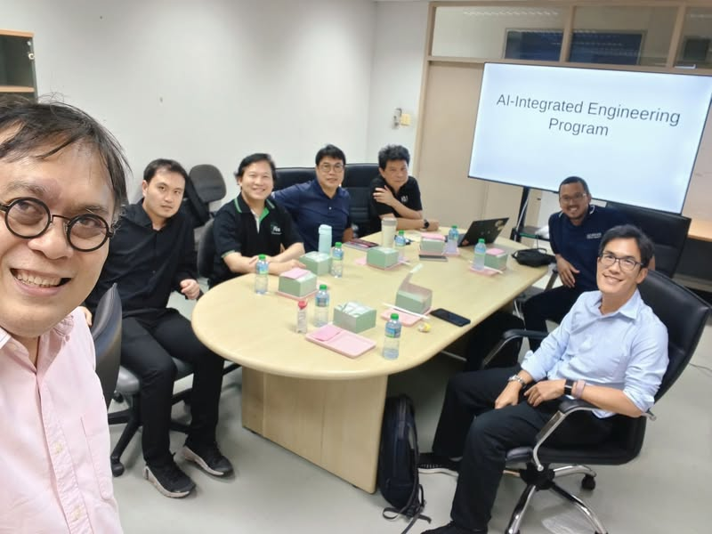

AI × เศรษฐศาสตร์ เชื่อมหลักสูตรกับโจทย์วิจัย


ผมได้มานั่งคุยกับ ผศ.ดร.สัณหะ เหมวนิช และ ผศ.ดร.ห้องศิลป์ ศรีเกตุ จากภาควิชาเศรษฐศาสตร์ คณะเศรษฐศาสตร์ พร้อมกับ อ.สมชาย อ.จิตร์ทัศน์ อ.ธนาวินท์ และ อ.ระพี ถึงแนวทางเชื่อม AI-Integrated Engineering Program (AIEP) เข้ากับหลักสูตรเศรษฐศาสตร์ครับ
วงคุยเริ่มตั้งแต่ AI จะช่วยตอบโจทย์เศรษฐศาสตร์อะไรได้บ้าง ไปจนถึงความรู้เศรษฐศาสตร์จะช่วยให้เราออกแบบระบบ AI ได้ดีขึ้นอย่างไร โดยเฉพาะเมื่อระบบที่เราสร้างมีผลต่อ การตัดสินใจของคน แล้วคนก็ปรับพฤติกรรมตอบกลับมาอีกที
หาสิ่งที่ทำร่วมกันแล้วไปได้ไกลขึ้น
โจทย์ที่ผมสนใจคือการหาสิ่งที่เมื่อมาทำร่วมกันแล้ว จะไปได้ไกลกว่าต่างคนต่างทำ เราอยากเห็นการเชื่อม AI เข้ากับ ทฤษฎีทางเศรษฐศาสตร์ เศรษฐมิติ และเศรษฐศาสตร์เชิงคำนวณ เพื่อเปิดโจทย์วิจัยใหม่ ๆ และให้การพัฒนาหลักสูตรกับงานวิจัยเดินไปด้วยกัน
ก้าวต่อไปคือเทียบหลักสูตรและเป้าหมายผู้เรียน
จากการหารือครั้งนี้ ก้าวต่อไปคือ นำหลักสูตรมาเทียบกัน ดูว่าตรงไหนเชื่อมได้ ตรงไหนต้องเติม และอยากให้ผู้เรียนเดินไปถึงอะไร เพื่อพัฒนาแนวทางเชื่อมสองศาสตร์ต่อไป
ผมหวังว่าจากวงคุยนี้ เราอาจได้แนวคิดที่จะพัฒนาเศรษฐกิจดิจิทัลไปได้ไกลกว่าที่เห็นในวันนี้ครับ